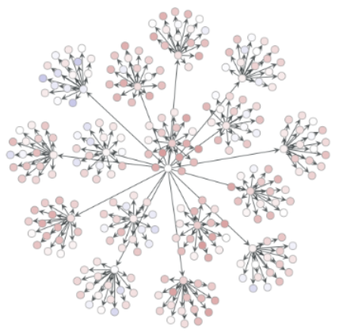

This Site
This site is a collection of idea that have slowly been added over the years. The look on different pages has changed.
I have experimented with markdown pages converted into HTML with a pandoc filter, pure html/CSS, and a brief unrealized use of
JS for some interaction. Though it is not a priority, I enjoy updating it from time to time as a time capsule (even
if looking at old code makes me die a little inside).
--> CHECK OUT THE BLOGS <--
Functional Compiler
Toy language that implements simply typed lambda calculus + 'fix'. Implemented for the Advanced Compilers class
at UNM in Haskell. Implemented in a team with a fellow undergraduate in the class.
--> GITHUB CODE <--
Various Reports

Over the years I have produced many reports for school. These are some of my favorites.
> Using a Quantum Computer
> The Doppler Effect
> Neutral Networks (not neural nets!)
> Single Photon Measuring
> Rubidium Excitation
> Slime Based Algorithm
Regression
Finds the best fit line for a linear set of points, quatdratic set, or for an nth degree polynomial. The
higher the degree the longer and less accurate it is. Uses Python 3 and matplotlib.
--> GITHUB
REGRESSION CODE <--
Tic-Tac-Toe
Uses server sockets in java to play tic-tac-toe across the internet betweem machines that each have the
runnable jar file. It also uses multiple threads and action listeners.
Flag Cart
For my Eagle Scout Project I designed, modeled, and lead the building of a custom cart that holds the 50
flag poles for the Model UN at El Toro High School. For this project I modeled the design in SketchUp
and used donations to fund the materials.
C

In my C class we had many projects that were well documented. Mos tof them are commented fairly well, or
are self explanatory.
--> GITHUB C-LANG CODE <--